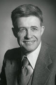

|  |
1979 год Kenneth E. Iverson (1920–2004) «За его пионерскую работу в области языков программирования и математической записи, имеющую результатом то, что сейчас известно среди специалистов как APL, за его вклад в реализацию интерактивных систем, использование APL в образовательных целях, а также в теорию и практику языков программирования» |
Страна: Канада
Образование: Доктор философии в области прикладной математики, Гарвардский университет, 1954
О лауреате
Научными руководителями Кеннета Айверсона были H. Aiken и крупный экономист Василий Леонтьев. H. Aiken разработал Harvard Mark IV, одну из первых крупномасштабных ЦВМ, Василий Леонтьев был экономистом, который разрабатывал метод «затраты — выпуск» экономического анализа, работы, за который он позже получил Нобелевскую премию. Модель Леонтьева требовала больших матриц, и Iverson работал над программами, которые могли оценить эти матрицы на Harvard Mark IV. Iverson получил степень доктора философии в Прикладной математике в 1954 с диссертацией на основе этой работы. С 1955 по 1960 гг. Айверсон, будучи доцентом в Гарварде, разработал нотацию для совершения операций с числовыми массивами. Он опубликовал описание этого алгоритма на созданном им языке программирования APL в 1961 году, в книге «A Programming Language» («Некий язык программирования»). Этот язык ориентирован на параллельную обработку массивов и содержит алгоритмические средства, позволяющие запрограммировать сложнейшие матричные вычисления в одной строчке. Такие возможности APL достигаются за счёт использования множества специальных символов и условных обозначений, отсутствующих на типичных компьютерных клавиатурах.
Ключевые слова: APL, J
Краткая библиография
| 1. |
Iverson, Kenneth E., A Programming Language, 1962, John Wiley and Sons, Inc. New York. Формальное определение и использование “Нотации Айверсона”. |
| 2. |
Iverson, K. E., 1991. “A personal view of APL,” IBM Systems Journal, Vol. 30, Num. 4, pp. 582 – 593. Взгляд Айверсона на разработку диалектов APL, APL2 и, особенно, J. |
| 3. |
Iverson, Kenneth E., Arithmetic, 1991, Iverson Software Inc., Toronto. Демонстрация различных тем в алгоритмах на языке J, также является образцом нескольких монографий Айверсона. |
| 4. |
Iverson, K. E., 1991, J Introduction and Dictionary, 1994, Iverson Software Inc., Toronto. Любое из изданий этой книги является необходимой точкой отсчёта для любого программирующего на J. |
| 5. |
Iverson, Kennet E., Concrete Math Companion, 1995, Iverson Software Inc., Toronto. Приложение на языке J для “Concrete Mathematics” написанной R. L. Graham, D.E. Knuth and O. Patashnik. |